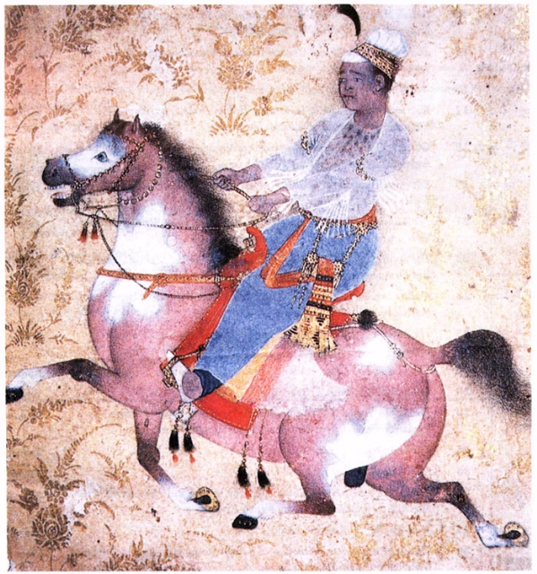

May-June 2000 BIBLIO
COVER PAINTING: 'Young Prince Riding'
attributed to the Paris painter, Admadnagar, c. 1575,
from the book
Architecture and Art of the Decan Sultanates by George Michell
and Mark Zebrowski
and published by Cambridge University Press, Cambridge, UK.
